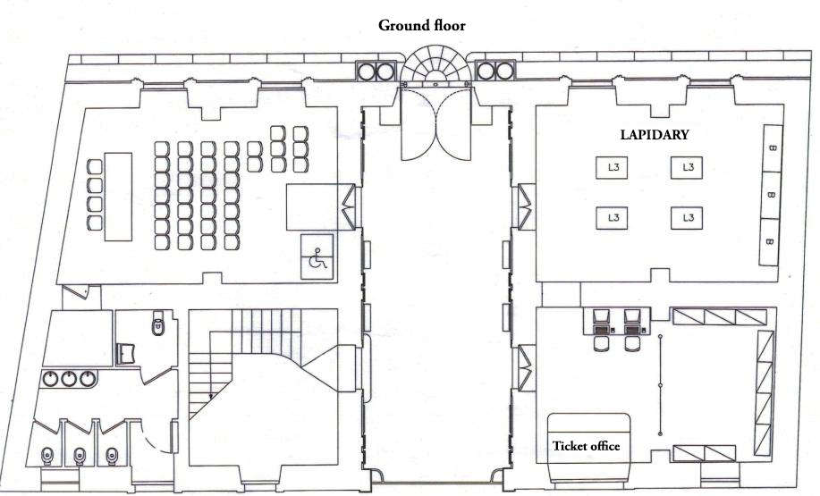
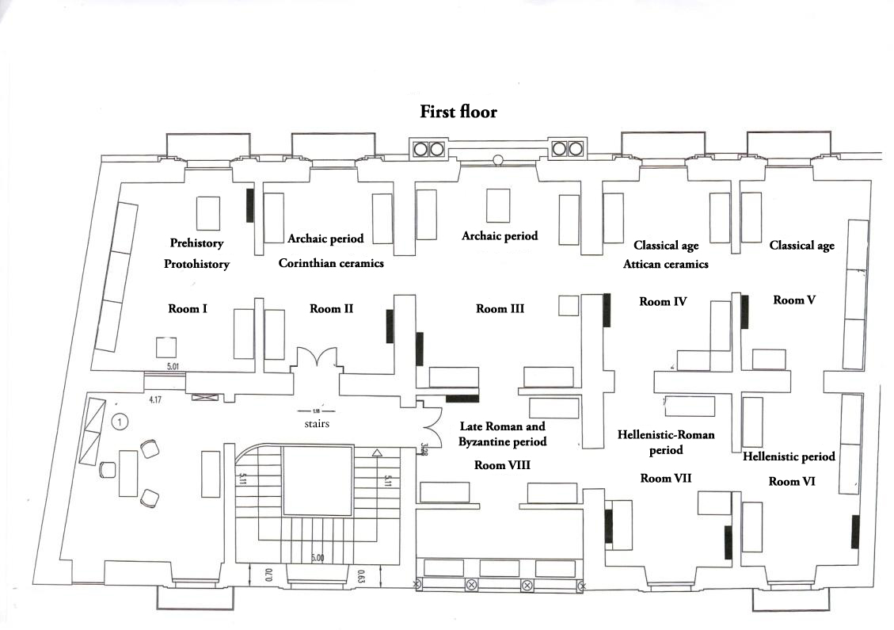

Museum Map
Ground Floor

The exhibition is divided on two floors. On the ground floor and in the corridor of entry are exhibited stone materials. Along the walls you can admire some inscriptions, funerary stelae and a stone with a Greek inscription of the IV-III century BC; the latter is very important to gain knowledge about the topography of the ancient city.
First Floor

On the first floor the exhibition follows a chronological path. Although it is a collection, the exhibition is aimed at documenting the long and complex historical stratification of the area: from the first human presence up to the Romanization, passing through prehistory and protohistory (room I), the archaic period (room II-III), the classical age (room IV-V), the Hellenistic period (room VI), the Hellenistic-Roman period (room VII) and the late Roman and Byzantine period (room VIII).